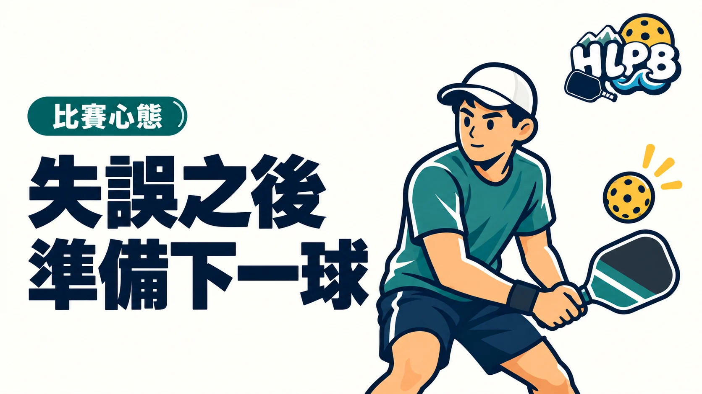

把失誤檢查、下一拍準備與尊重搭檔分開，讓注意力回到可調整的事。
失誤後一直回想上一球，很容易忘了下一球已經要開始。想調整表現，可以先把結果與原因分開：這一分結束了，但下一分仍需要準備。找出一個能做的調整，比同時要求自己改掉所有問題更容易開始。
這篇先談什麼
這篇整理失誤後的準備與搭檔溝通。重點是保留注意力、維持尊重，讓練習有可以檢查的方向。
| 重點 | 怎麼理解 |
|---|---|
| 先回到準備 | 確認下一分的發球、接發位置與報分，把注意力放回即將進行的回合。 |
| 只選一個重點 | 區分動作、落點與選球問題，先挑一項檢查，不用每次都全面否定自己。 |
| 支持搭檔 | 避免責怪、負面手勢或摔拍。需要討論時，用尊重方式說明可調整的方向。 |
上一球可以檢討，下一球仍要準備。失誤是需要整理的資訊，不是對一個人的評價。
常見問題
是不是要完全不在意輸贏？
不用。可以重視結果，同時把注意力放在當下能控制的準備與選擇。
只要保持正面就會打好嗎？
不會。技術、體能、判斷與練習都重要，心態不能取代這些能力。
來源與編輯說明
核對：2026/10/12。規則與教學觀念參考所列來源。閱讀排序與整理文字為 HLPB 編輯建議。
HLPB 編輯整理｜最後查證：2026-10-12